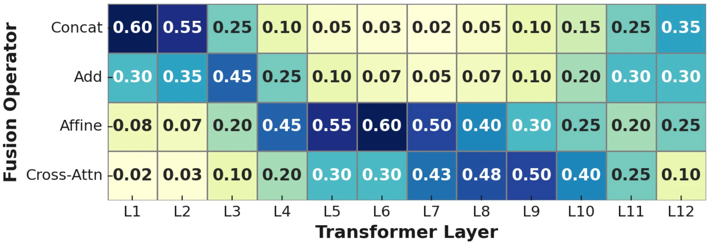
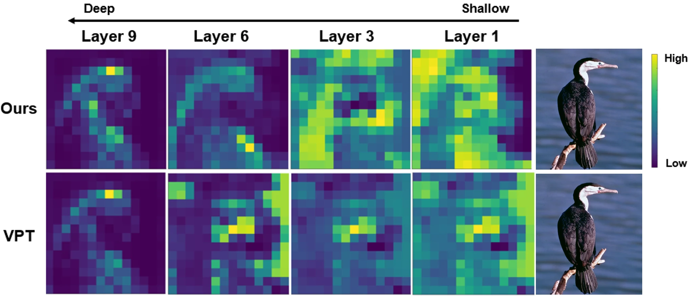
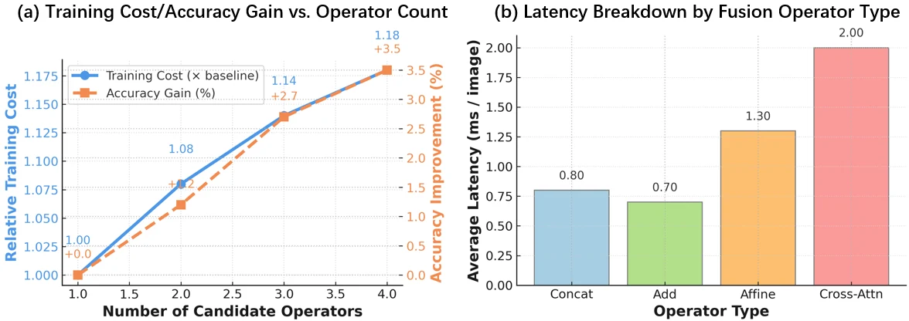

Fusion is layer dependent.
Early, middle, and late transformer blocks benefit from different prompt-token interactions.
A differentiable search framework discovers which prompt-token fusion operator each transformer layer should use, replacing one-size-fits-all visual prompt injection.
Abstract
Visual prompt tuning often uses a fixed fusion strategy across all transformer layers, even though shallow, middle, and deep layers encode different types of visual information.
This work formulates prompt fusion as a differentiable architecture search problem over operators such as concatenation, addition, affine fusion, and cross-attention. A bilevel optimization procedure discovers a hybrid layer-wise fusion policy that improves transfer while keeping parameter cost low.
Three claims
Early, middle, and late transformer blocks benefit from different prompt-token interactions.
Differentiable selection finds hybrid fusion paths that outperform the best single fixed operator.
The searched design reaches strong transfer performance while tuning roughly 0.75% of model parameters.
Method
Each layer can choose among concatenation, addition, affine fusion, and cross-attention-style prompt interactions.
Architecture weights and prompt parameters are optimized on separate splits to discover robust fusion policies.
The final layer-wise policy is discretized, then trained as an efficient prompt module on top of the frozen backbone.

Fusion Search
argmin over layer-wise fusion choices: validation loss after prompt training
Results


Why it matters
Frozen vision transformers are not homogeneous stacks; their layers specialize. A single prompt fusion rule therefore constrains adaptation in a way that is easy to overlook.
Layer-specific discovery gives parameter-efficient tuning a principled route to match fusion behavior with representation depth.
Citation
If our work is helpful to your research, please consider citing this paper. Thank you.
@misc{xiao2026promptfusiondiscovery,
title = {Layer-Specific Prompt Fusion Discovery via Differentiable Search in Vision Foundation Models},
author = {Xi Xiao and Xingjian Li and Yunbei Zhang and Cheng Han and Tianming Liu and Tianyang Wang and Runmin Jiang and Jihun Hamm and Xiao Wang and Min Xu},
year = {2026},
note = {Project page: https://xixiaouab.github.io/Prompt-Fusion-Discovery/}
}